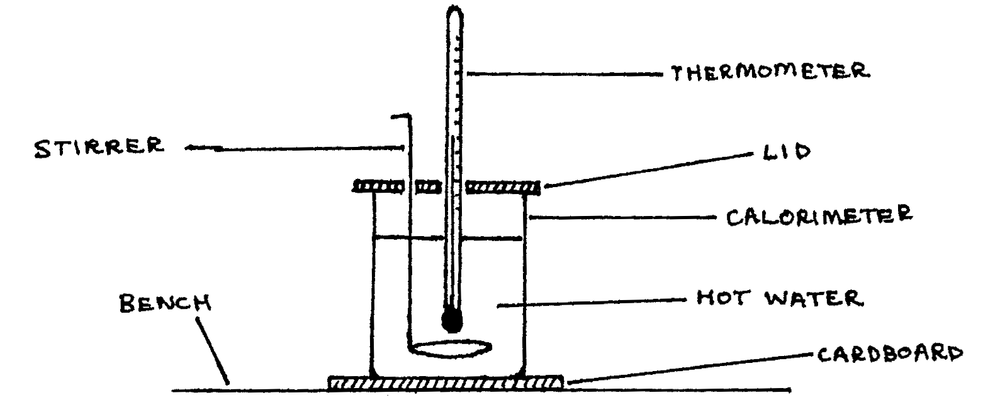

86-Q2: Newton’s New of Cooling¶
Time 1\(\frac{1}{2}\) hr.
Apparatus¶
Thermometer (\(0-100\text{°C}\)); calorimeter (very small capacity), with lid & stirrer; cardboard base; stopclock; supply of boiling water; 2 sheets graph paper; clamp & stand.
The aim of this experiment is to investigate the manner in which a calorimeter containing hot water cools down.
Procedure¶
Pour the boiling water into the calorimeter until it is about three-quarters full, and then set up the calorimeter as illustrated below. Carefully observe and record the temperature \(\theta\text{°C}\) of the water inside the calorimeter after every two minutes. Continue the process while stirring the calorimeter until the temperature of the water drops to about \(50\text{°C}\).

- Tabulate the values of \(\theta\) (in °C) and the corresponding values of time \(t\) (in minutes), starting at \(t=0\). Also measure and record the room temperature \(\theta_R\). (marks 8,4)
- Plot the cooling curve for the calorimeter and its contents using the table in (a) above. (10 marks)
- Choose six points (\(\theta\), \(t\)) along the curve in (b) above and at each point draw the tangent to the curve and then determine the gradient \(G\) of the curve at that point. Calculate and record the excess temperature (\(\theta - \theta_R\)) corresponding to each of the six points chosen. Hence make up a table that consists of values of \(G\) with corresponding values of (\(\theta - \theta_R\)). (marks 3,6,3)
- Using the results of (c) above, draw a graph of “Rate of cooling” vs. “Excess temperature.” (10 marks)
- Compare the results of (d) above with Newton’s Law of Cooling and make any relevant comments. (6 marks)